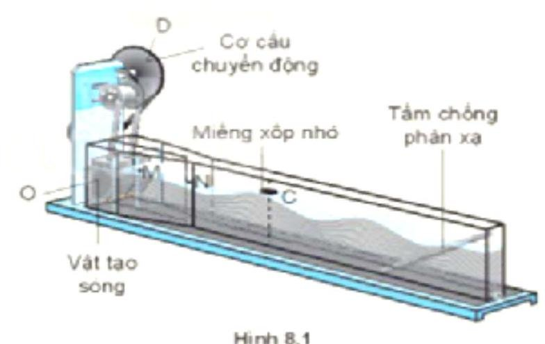

Mỗi câu có 4 phương án, chỉ chọn một đáp án đúng (0,25 điểm).
1
Nhận biết
Một sóng hình sin đang lan truyền trong một môi trường. Các phần tử môi trường ở hai điểm nằm trên cùng một hướng truyền sóng và cách nhau một số nguyên lần bước sóng thì dao động:
2
Nhận biết
Một sóng ngang có phương trình sóng là $u=8\text{cos}\left[ \pi\left( t-d/5\right)\right]\text{mm}$, trong đó $d$ có đơn vị là $\text{cm}$. Bước sóng của sóng là
3
Nhận biết
Một sóng ngang có phương trình dao động $u=6\text{cos}\left[ 2\pi\left( t/0,5-d/50\right)\right]\text{cm}$, với $d$ có đơn vị mét, $t$ đơn vị giây. Chu kỳ dao động của sóng là
4
Nhận biết
Một sóng cơ có phương trình $u=8\text{cos}\left[ 2\pi\left( t/0,1-d/50\right)\right]\text{mm}$. Chu kỳ dao động của sóng là
5
Nhận biết
Trong thí nghiệm ở hình 8.1, nếu ta thay đổi tần số dao động của nguồn sóng thì đại lượng nào sau đây không thay đổi?

Hình 8.1
6
Nhận biết
(SBT - KNTT) Một sóng có tần số $120\text{ Hz}$ truyền trong một môi trường với tốc độ $60\,m/s$. Bước sóng của nó là
7
Nhận biết
Sóng cơ lan truyền trong môi trường đàn hồi với tốc độ $v$ không đổi, khi tăng tần số sóng lên 2 lần thì bước sóng
8
Nhận biết
Một sóng lan truyền với tốc độ $v=200\,m/s$ có bước sóng $\lambda=4\,m$. Chu kì dao động của sóng là:
9
Nhận biết
Một sóng cơ có tần số $200\text{ Hz}$ lan truyền trong một môi trường với tốc độ $1500\,m/s$. Bước sóng $\lambda$ là:
10
Nhận biết
Một sóng cơ truyền trên một sợi dây rất dài với tốc độ $1\,m/s$ và chu kì $0,5\,s$. Sóng cơ này có bước sóng là:
11
Nhận biết
Tại điểm $M$ cách một nguồn sóng một khoảng $x$ có phương trình dao động sóng $M$ là $u_{M}=4\cos\left(200\pi t-\frac{2\pi x}{\lambda}\right)\left(\text{cm}\right)$. Tần số của dao động sóng bằng
12
Nhận biết
Trên mặt nước có một nguồn dao động tạo ra tại điểm $O$ một dao động điều hoà có tần số $f=50\text{ Hz}$. Trên mặt nước xuất hiện những sóng tròn đồng tâm $O$ cách đều, mỗi vòng cách nhau $3\text{ cm}$. Tốc độ truyền sóng ngang trên mặt nước có giá trị bằng
13
Nhận biết
Tại một điểm $O$ trên mặt thoáng của một chất lỏng yên lặng ta tạo ra một dao động điều hoà vuông góc với mặt thoáng có chu kì $T=0,5\,s$. Từ $O$ có các vòng sóng tròn lan truyền ra xung quanh, khoảng cách hai vòng liên tiếp là $0,5\,m$. Xem như biên độ sóng không đổi. Tốc độ truyền sóng có giá trị
14
Nhận biết
Tại điểm $O$ trên mặt nước yên tĩnh, có một nguồn sóng dao động điều hoà theo phương thẳng đứng với tần số $f=2\text{ Hz}$. Từ $O$ có những gợn sóng tròn lan rộng ra xung quanh. Khoảng cách giữa 2 gợn sóng liên tiếp là $20\text{ cm}$. Tốc độ truyền sóng trên mặt nước là
15
Nhận biết
Mũi nhọn của âm thoa dao động với tần số $f=440\text{ Hz}$ được để chạm nhẹ vào mặt nước yên lặng. Trên mặt nước ta quan sát khoảng cách giữa hai ngọn sóng liên tiếp là $2\text{ mm}$. Tốc độ truyền sóng là
16
Nhận biết
Đối với sóng cơ học, tốc độ truyền sóng phụ thuộc vào
17
Nhận biết
Một sóng cơ hình sin truyền trong một môi trường. Xét trên một phương truyền sóng, khoảng cách giữa hai phần tử môi trường gần nhau nhất dao động cùng pha là
18
Nhận biết
Một sóng cơ học có tần số 40 Hz lan truyền với tốc độ 360 cm/s. Bước sóng là:
19
Nhận biết
Khoảng cách giữa hai điểm trên phương truyền sóng gần nhau nhất và dao động cùng pha với nhau gọi là